This article retains its original experiments and examples. For current package usage, see the usage guide.
Random Initialization
The usual initialization routine for t-SNE is to start from a small
random gaussian distribution, and use “early exaggeration” for the first
100 or so iterations where the input probabilities are multiplied by 4
(these settings are modified slightly for the larger datasets used by
Barnes-Hut t-SNE, which are currently too large for
smallvis to handle).
The down side of using a random initialization is repeatability: even
if you use a fixed seed, I’m not sure there’s a guarantee that you get
the same results across architectures, e.g. Windows and Linux. There’s
also the issue of variability: what if the results you get aren’t very
good due to dumb luck? You can re-run the routine a fixed number of
times via smallvis_rep, which will return the result with
the smallest error, but that increases the run time significantly.
Other Initialization Options
There are two alternatives available in smallvis: the
first one is to use the first two principal components from PCA on the
input data, rescaled to have the same standard deviation as the gaussian
distribution from the random initialization (0.0001). This
prevents large initial distances (which can happen if the input data
isn’t scaled) which in turn can lead to small gradients and premature
convergence. Do we need to use early exaggeration with a PCA-based
initialization? Hard to say, so we should try it both ways.
Another possibility is to use a spectral embedding of some kind.
smallvis uses the Laplacian Eigenmap
technique. Linderman and
Steinerberger have shown that the early exaggeration method, by
up-weighting the attractive part of the t-SNE gradient, approaches a
spectral embedding. This is also the initialization used in UMAP, although a different
form of the graph Laplacian is used. If the theory about the equivalence
of spectral embedding and early exaggeration is correct, we don’t need
to use early exaggeration with a spectral initialization.
Update February 19 2018: A normlaplacian
initialization is now available in smallvis, based off how
UMAP does it. These give almost identical results to using the Laplacian
Eigenmaps experiments so we don’t consider them in the main text but you
can see for yourself in a new section at the end.
The experiment
Based on the above, we’ll consider four different initialization methods below:
- Random initialization, choosing the result with the lowest error from ten runs.
- Laplacian Eigenmap.
- Scaled PCA.
- Scaled PCA with early exaggeration.
Datasets
See the Datasets page.
Settings
Results below were generated using the following commands
(exemplified by the iris dataset):
# Random (Best of 10)
tsne_iris_rxr <- smallvis_rep(
nrep = 10,
iris,
method = "tsne",
perplexity = 40,
eta = 100,
max_iter = 1000,
verbose = TRUE,
Y_init = "spca",
scale = FALSE,
ret_extra = c("dx", "dy"),
exaggeration_factor = 4
)
# Laplacian Eigenmap
tsne_iris_lap <- smallvis(
iris,
method = "tsne",
perplexity = 40,
eta = 100,
max_iter = 1000,
verbose = TRUE,
Y_init = "lap",
scale = FALSE,
ret_extra = c("dx", "dy")
)
# Scaled PCA
tsne_iris_s <- smallvis(
iris,
method = "tsne",
perplexity = 40,
eta = 100,
max_iter = 1000,
verbose = TRUE,
Y_init = "spca",
scale = FALSE,
ret_extra = c("dx", "dy")
)
# Scaled PCA with early exaggeration
tsne_iris_sx <- smallvis(
iris,
method = "tsne",
perplexity = 40,
eta = 100,
max_iter = 1000,
verbose = TRUE,
Y_init = "spca",
scale = FALSE,
ret_extra = c("dx", "dy"),
exaggeration_factor = 4
)Other settings, such as initial learning rate, number of iterations and perplexity, are those taken from the original t-SNE paper. Unlike the results presented there, no scaling of the input data or any initial dimensionality reduction via PCA was carried out.
In the images below results marked with rand are for the
best of 10 random initializations, LE are the Laplacian
Eigenmap results, SPCA use scaled PCA, and
SPCA+X used scaled PCA with early exaggeration.
Evaluation
For each initialization, the mean neighbor preservation of the 40
nearest neighbors, calculated using the quadra package: for each
point the 40 nearest neighbors are calculated in the input and output
space, and the fraction of neighbors in common is recorded (0 means no
neighbors are in common, 1 means all the neighbors were preserved). The
number reported is the mean average over all results and is labelled as
mnp@40 in the plots. 40 was chosen for these results to
match the perplexity.
For example, for the tsne_iris_rxr result given above,
the mnp@40 value is calculated using:
av_pres <- mean(quadra::nbr_pres(
tsne_iris_rxr$DX,
tsne_iris_rxr$DY,
tsne_iris_rxr$perplexity
))This calculation requires extra data to be calculated when results
are reported: the input and output distance matrices, DX
and DY respectively. These are not returned by default;
hence the use of ret_extra = c("dx", "dy") in the call to
smallvis.
Note that with the random initialization, when we talk about the “best” result, we mean the result that leads to the lowest error (for t-SNE, the Kullback-Leibler divergence). This doesn’t necessarily correspond to the best possible mean neighbor preservation result of the ten runs.
The neighbor preservation provides a reasonable quantitative way to assess the accuracy of the embeddings. However, visual inspection should probably remain the ultimate arbiter. In the following, results are colored by a category that the data points belong to (except for the Frey faces, see below).
Milder Optimization?
The optimization parameters used were those given in the t-SNE paper, which uses the random initialization. Let’s just check that they aren’t too aggressive when using a different initialization. In the following I reduce the learning rate by an order of magnitude and use a much lower initial momentum, initializing from Laplacian Eigenmaps:
tsne_iris_lap <- smallvis(
iris,
method = "tsne",
perplexity = 40,
max_iter = 1000,
verbose = TRUE,
Y_init = "lap",
scale = FALSE,
ret_extra = c("dx", "dy"),
eta = 10,
momentum = 0.1
)Here are the results, alongside the Laplacian eigenmap results (repeated from the results above):
| Original Optimization | Milder Optimization |
|---|---|
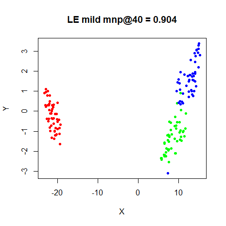 |
|
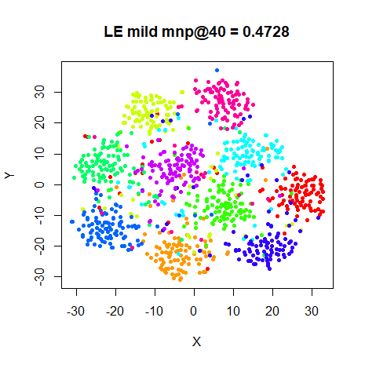 |
|
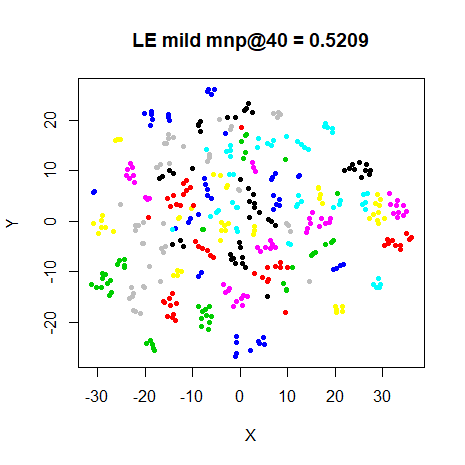 |
|
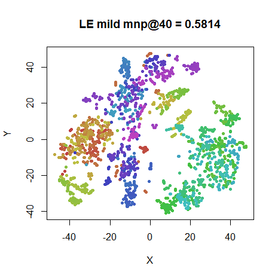 |
|
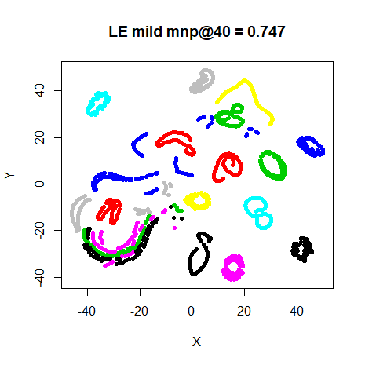 |
|
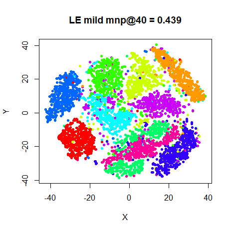 |
|
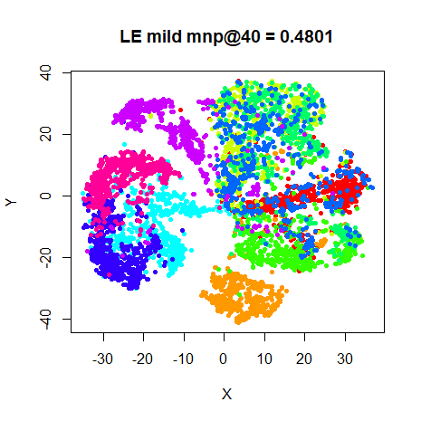 |
I observe no exciting differences in either the final layout of the
preservation values, although in all cases except oli, the
milder optimization values result in higher preservations. I repeated
this for the spca initialization and got the same results,
so no need to show those.
Conclusions
Visually, I’m not sure there’s a lot to choose between the different initialization methods. The same clusters shows up in the plots, although their relative locations change. There’s definitely not one method that outperforms the others.
Quantitatively, if you have the time to run the embedding multiple times, the preservations from choosing the best of 10 random initializations works the best, in terms of neighborhood preservations. But there’s not much of a difference there, either. Admittedly, these are all comparatively small datasets. Early exaggeration gives a very slight improvement for the SPCA results most of the time, but doesn’t seem that critical either.
From these results, it seems that either the
Y_init = "laplacian" or Y_init = "spca" can be
recommended for initialization.
Update February 16, 2018: For (a failed) attempt to use more information from the results of the random initializations, see Averaging Multiple Results.
Normalized Laplacian Results
Update February 19, 2018: Normalized Laplacian
initialization in the style of UMAP is now implemented in
smallvis, but as noted above, results are almost identical
to Laplacian Eigenmap initialization. Below is pictorial evidence.
These comparisons use the same settings as those in the Averaging Multiple Results page, so for comparison I have borrowed the Laplacian Eigenmap results from there. Therefore the LE results below aren’t quite the same as those in the main text of this article, but they are very similar.
iris_nl <- smallvis(
iris,
scale = FALSE,
perplexity = 40,
Y_init = "normlap",
method = "tsne",
eta = 100,
exaggeration_factor = 4,
stop_lying_iter = 50
)Images in the left column are for the normalized Laplacian initialization (marked as “NL”). On the right hand side are the results from using a Laplacian Eigenmap initialization. I flipped the resulting coordinates from normalized Laplacian initialization in the X or Y axis where appropriate to get them in the same orientation as the Laplacian Eigenmaps result.
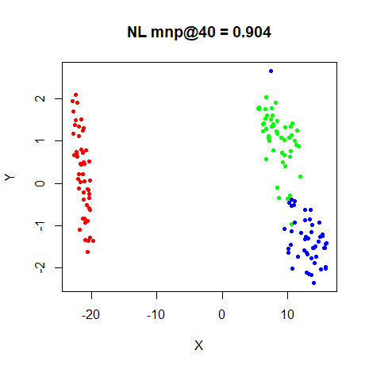 |
 |
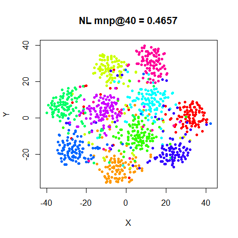 |
 |
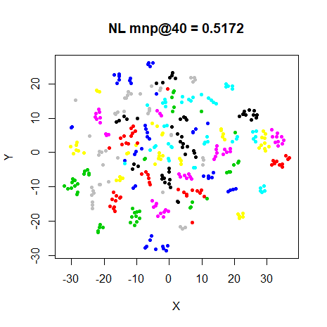 |
 |
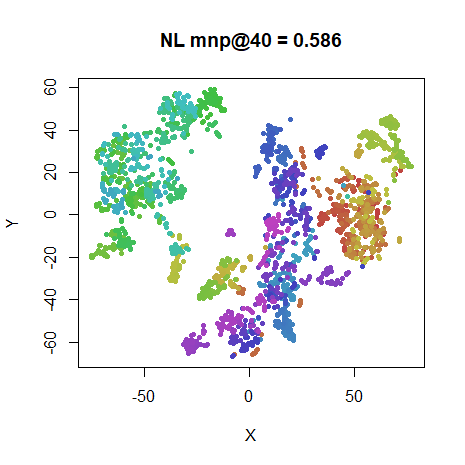 |
 |
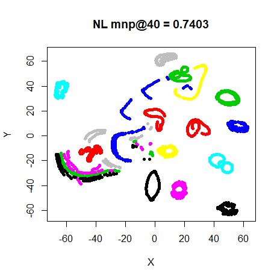 |
 |
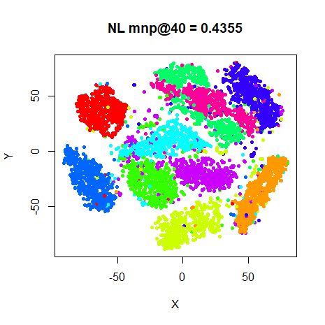 |
 |
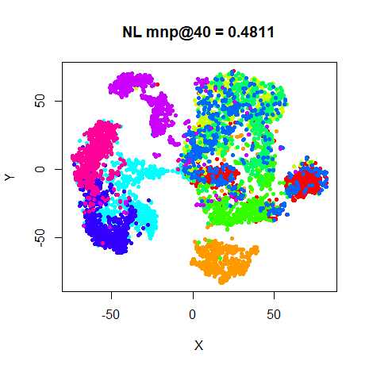 |
 |
Only the iris result shows even a slight difference
(well, one of the loops in the coil20 result is slightly
rotated).